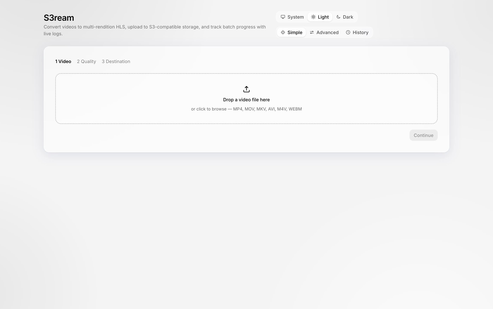
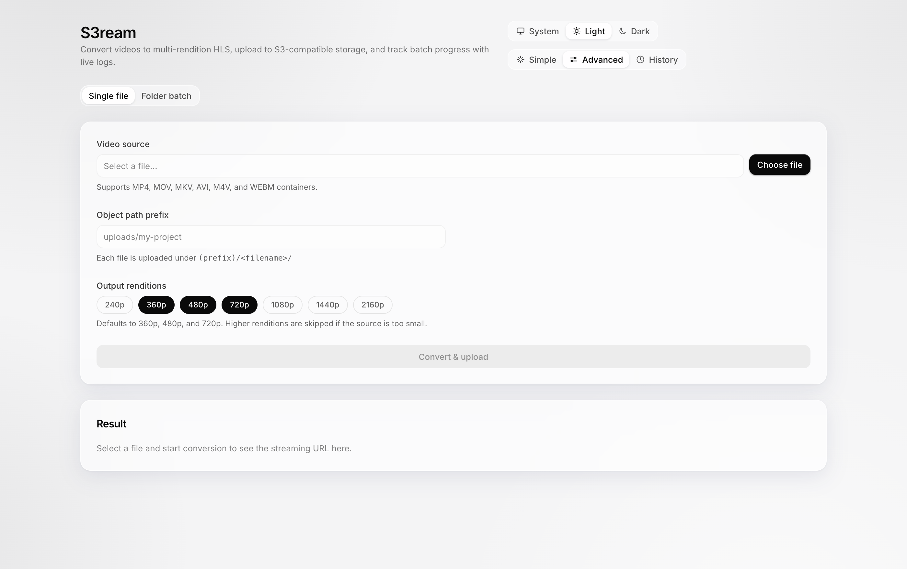
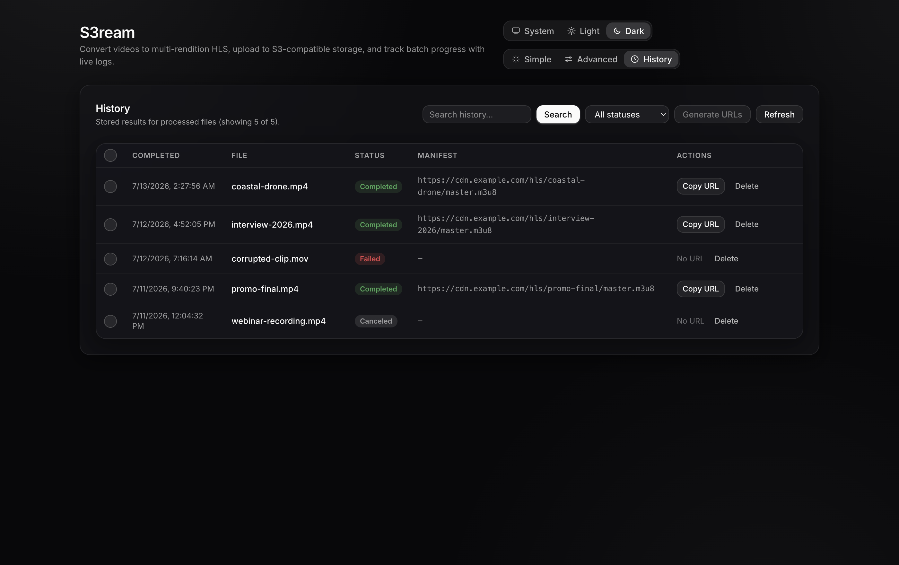

Encodes locally
Bundled FFmpeg and FFprobe do the work on your machine. Your video never touches a third-party server.
S3ream is a desktop app that turns a video file into an adaptive HLS stream — a master playlist plus multiple quality renditions — encoded locally with FFmpeg and uploaded straight to any S3-compatible storage. No transcoding server, no cloud service, nothing in between.
Works with AWS S3 · Cloudflare R2 · Backblaze B2 · RustFS · MinIO
Download
Builds are unsigned — on macOS right-click → Open on first launch; on Windows click “More info” → “Run anyway”.
See it work
The real Simple journey, sped up.
Pick your renditions
Profiles taller than the source are skipped automatically.
s3://my-bucket/videos/promo-night/
x264 veryfast · aac · hls_time 6s · master.m3u8
https://cdn.example.com/videos/promo-night/master.m3u8
Simulated for this page — the app shows live FFmpeg and upload progress.



How it works
Everything happens on your machine. S3ream only talks to the S3 endpoint you configure.
FFprobe reads the source's resolution, duration, and frame rate.
FFmpeg renders each chosen rendition to x264 video and AAC audio with 6-second HLS segments.
A master.m3u8 ties the renditions together with bandwidth, resolution, frame rate, and codecs.
A worker pool streams every playlist and segment to your bucket — then temp files are cleaned up automatically.
What lands in your bucket
my-bucket/videos/promo-night/├── master.m3u8 ← the URL you play├── 1080p/index.m3u8 + segment-*.ts├── 720p/index.m3u8 + segment-*.ts└── 480p/index.m3u8 + segment-*.ts
Serve master.m3u8 from your bucket URL or CDN — it
plays in Safari, hls.js, and VLC out of the box.
The Simple journey
The default wizard mirrors how you'd think about the job — no FFmpeg flags, no S3 jargon.
MP4, MOV, MKV, AVI, M4V, or WEBM — drag it onto the drop zone or browse.
Choose the output qualities, 240p through 4K. Profiles taller than your source are skipped automatically.
Your S3 endpoint with an access key and secret, or a plain local folder.
Hit Convert, watch live progress, then grab the manifest URL from History. Need more control? The Advanced view batches a whole folder with configurable concurrency.
What you get
Bundled FFmpeg and FFprobe do the work on your machine. Your video never touches a third-party server.
A proper master playlist with BANDWIDTH, RESOLUTION, FRAME-RATE, and CODECS — not a single-quality re-encode.
Custom endpoint URL with path-style support for self-hosted stores. Tested against AWS S3, Cloudflare R2, Backblaze B2, RustFS, and MinIO.
Scan a folder, queue every video, and process with configurable concurrency (1–16). Pause, resume, or cancel anytime.
Access keys are encrypted at rest with the OS keychain (Electron safeStorage) and never leave the main process.
Every job is logged and searchable. Re-adding a finished file is skipped automatically, and manifest URLs copy in bulk.
Bring your own bucket
Quickstart
Packaged binaries for macOS, Windows, and Linux are in the Download section above. Building from source takes a minute:
git clone https://github.com/Gr3gg0r/S3ream.gitcd S3reampnpm installpnpm run dev # run the apppnpm run dist # package for your OS
Requires Node 20.19+ and pnpm 8.15.4 — both pinned in
.prototools for proto users. macOS dmg/zip · Windows
nsis/portable · Linux AppImage/deb.